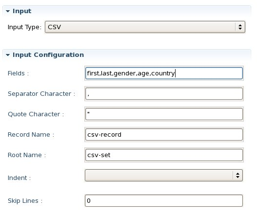
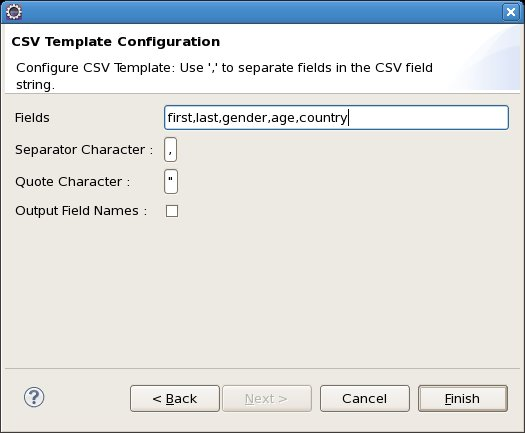
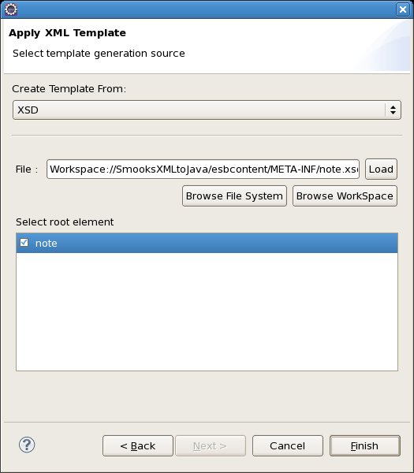
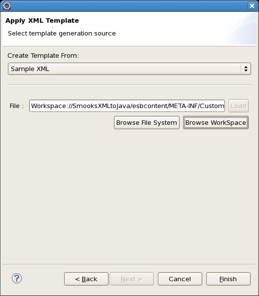
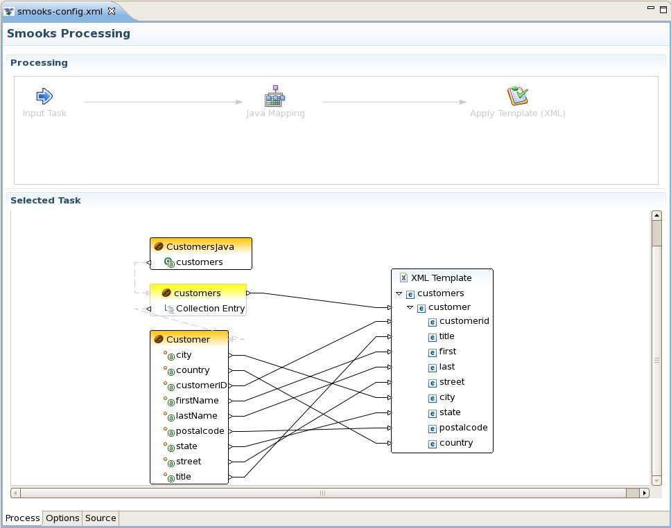
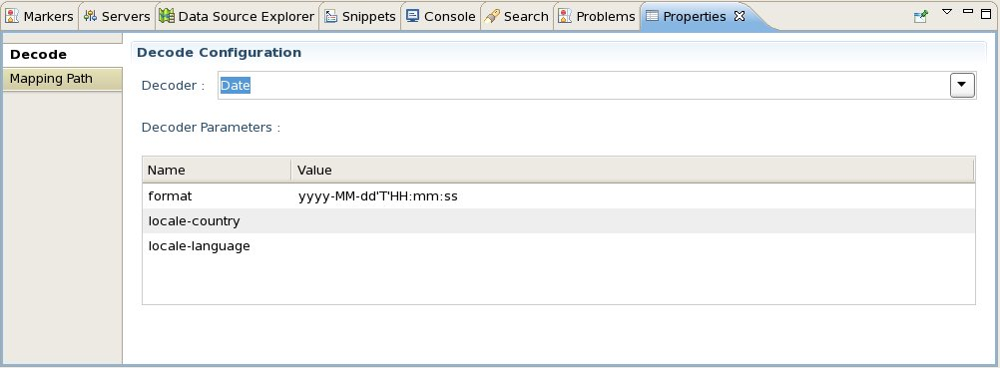

Smooks Configuration Editor
In CR1 we added the ability to create Run Configurations to test your Smooks Configuration. In CR2 we've added a shortcut to create those Run Configurations quickly from the Run As... menu on the toolbar or in the Run menu of the main menubar.

We've greatly simplified the configuration of CSV Input Sources and CSV templates in CR2, boiling the UI down to just a few fields.
For the Input configuration, it boils down to the list of fields separated by the separator character.
For the Apply Template wizard when you select CSV, it also boils down to the list of fields separated by the separator character.
Related Jiras: JBIDE-5316, JBIDE-5422
In addition to applying a CSV template to define an output format, you can now apply an XML template and use either an XSD or XML Sample to define the format.
You can specify an existing XSD in the Apply Template wizard when you select XML. To do so, choose whether to browse the file system or the workspace and then click "Load" to load the XSD. Once loaded, specify the root element.
You can also specify a sample XML file in the Apply Template wizard. Again, choose whether to browse the file system or the workspace and then click "Load" to load the XML file.
Once you click Finish in either wizard, the XML/XSD model is placed on the canvas and you can drag/drop from the Java Class to the outgoing format.
Related Jiras: JBIDE-5566
For certain types of mappings, you have to tell Smooks how to "decode" the incoming format. Date formats for example come in many shapes and sizes and Smooks can't infer which format the data may be in without some help. You can now configure Decoders via the UI.
When editing a Java Mapping, select a link between an input value and the class member. In the Properties dialog, you will see where to specify the decoder and any decoder properties that need to be set. Please see the Smooks User Guide for more about decoders and decoder properties.
Related Jiras: JBIDE-5716, JBIDE-5726